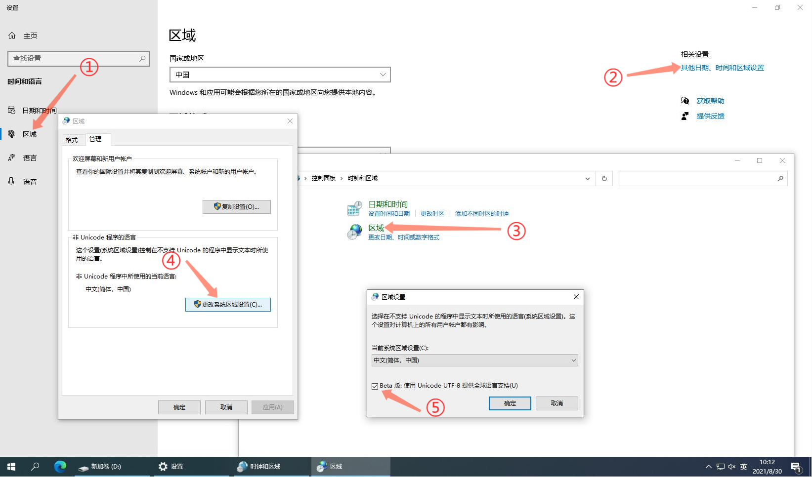
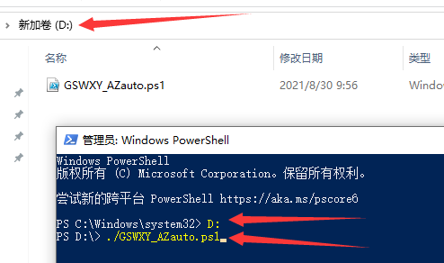

GSWXY_AZauto一键编译源码
前言
该脚本是基于Github上stoudtlr写的“AzerothCore-Windows-AutoBuilder”修改而来，但该脚本已经两年多没更新了，运行过程中更是错误百出。于是我抽时间修改了下，完成了汉化（当然调用编译和安装软件脚本时不能翻译），修订各系统环境软件地址，保证最新、保证最快，加入了各类可选功能，修复了大量错误，有多少我也记不清了，反正我是一路披荆斩棘……具体功能有：
- 修改系统Hosts和DNS地址（可选），以解决或加快Github访问；
- 自定义源码下载、编译，构建服务端文件夹地址，以及MYSQL的Root密码；
- 下载官方Data文件（可选），地址更改为国内地址，提高下载速度；
- 自动检测和自动安装系统环境，包括Git、Cmake、Visual Studio、OpenSSL、Boost、MySQL和HeidiSQL工具；
- 自动编译源码，可勾选各个功能MOD，自动生成服务端，自动更改服务端各类配置文件，自动创建启动脚本；
- 配套HeidiSQL数据库管理工具（绿色版），生成在服务端的Tool文件夹内。
源码已上传到我的Github仓库，欢迎Star和Fork！大家共同维护！
使用方法
准备
更改 PowerShell 执行策略
以管理员身份打开PowerShell 输入：
Set-Executionpolicy -Scope CurrentUser -ExecutionPolicy UnRestricted #执行后输入A |
更改 PowerShell 中文显示

如图所示，勾选“Beat版：……”，确定后重启电脑即可。
运行脚本
下载脚本
点击此处（提取码：gq8z）下载脚本，放在任何非中文路径下，本文演示的是放在D盘。
打开脚本
管理员方式打开PowerShell（本文若非特殊说明，均为以管理员方式打开），依次输入：
D: |
如图所示：

运行说明
- 依次提示你是否修改系统Hosts（每日自动更新最新Hosts）和DNS地址（阿里云），如果你不能访问Github，请务必修改；
- 依次提示你是否修改源码下载、编译和、服务端路径，以及MYSQL的root密码，如不需要修改，直接回车即可；
- 提示你是否下载官方的Data文件（内含地图文件和DBC文件），如果选No，请务必在服务端生成后手动复制你自己的Data文件到服务端目录内；
- 依次检测系统是否安装Vcredist_x64、Git、Cmake、Visual Studio、OpenSSL、Boost、MySQL，如未安装则自动下载并安装，安装完成后会提示你重新打开PowerShell运行脚本；
- 脚本自动下载Azerothcore源码，然后提醒你勾选功能模块（请注意该MOD应适用于当前版本的源码），如不需任何模块请直接点击确定；
- 脚本自动创建服务端，更改配置文件，并自动下载Data文件（如果前面你同意下载的话）；
- 脚本自动生成MYSQL，自动导入和配置数据库（包括MOD需要导入的MYSQL文件）；
- 创建启动脚本。
至此服务端搭建完毕。不过虽然有这个一键编译脚本，但还是建议大家多学下手动编译，了解下原理。如果有任何问题，欢迎来QQ群（938973736）讨论交流！
科普一下，在你每次启动服务端时候，都会自动更新你的数据库，另外如果启动服务端时候出现以下提示：
mysql: [Warning] Using a password on the command line interface can be insecure. |
不必担心，原因是服务端在更新数据库时候，以命令行的方式传输密码是不安全的，所以给你以上提示，不用管就行了。
本博客所有文章除特别声明外，均采用 CC BY-NC-SA 4.0 许可协议。转载请注明来自 GSWXY！
 微信
微信 支付宝
支付宝